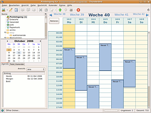
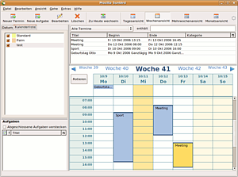

Mozilla Sunbird
Archivierte Anleitung
Dieser Artikel wurde archiviert, da er - oder Teile daraus - nur noch unter einer älteren Ubuntu-Version nutzbar ist. Diese Anleitung wird vom Wiki-Team weder auf Richtigkeit überprüft noch anderweitig gepflegt. Zusätzlich wurde der Artikel für weitere Änderungen gesperrt.
Anmerkung: die Entwicklung an Mozilla Sunbird wurde zugunsten der Erweiterung Lightning für Thunderbird eingestellt.
Zum Verständnis dieses Artikels sind folgende Seiten hilfreich:
Mozilla Sunbird ist ein eigenständiger, plattformunabhängiger Personal Information Manager (PIM) und unterstützt den Standard iCalendar zum Speichern und Laden von externen Kalendern. Sunbird ist Teil des Mozilla Calender Projects  . Ursprünglich teilte sich das Projekt in zwei Komponenten auf: einmal Mozilla Sunbird und einmal Mozilla Lightning. Hinter beiden Projekten steht zwar die gleiche Kalenderanwendung, Lightning ist jedoch keine eigenständige Anwendung, sondern eine Erweiterung für das E-Mail-Programm Thunderbird. Die Weiterentwicklung von Sunbird wurde mit der Version 1.0 eingestellt, da kein Bedarf mehr für eine eigenständige Kalenderapplikation gesehen wurde. Lightning wird dagegen aktiv weiterentwickelt.
. Ursprünglich teilte sich das Projekt in zwei Komponenten auf: einmal Mozilla Sunbird und einmal Mozilla Lightning. Hinter beiden Projekten steht zwar die gleiche Kalenderanwendung, Lightning ist jedoch keine eigenständige Anwendung, sondern eine Erweiterung für das E-Mail-Programm Thunderbird. Die Weiterentwicklung von Sunbird wurde mit der Version 1.0 eingestellt, da kein Bedarf mehr für eine eigenständige Kalenderapplikation gesehen wurde. Lightning wird dagegen aktiv weiterentwickelt.
Installation¶
Die Version aus den Paketquellen entspricht aufgrund der Versionspolitik von Ubuntu nicht immer dem aktuellen Stand. Wer die jeweils aktuellste Version haben möchte, sollte Mozilla Lightning oder Sunbird manuell installieren.
Unabhängig davon sollte man beachten, dass die Installation der benötigten Bibliothek libstdc++5 unter Ubuntu problematisch sein kann. Abschließend noch eine empfehlenswerte Lektüre vor der Installation.
|  |
| Lightning |
Lightning¶
ab Ubuntu 10.10¶
Ab Ubuntu 10.10 Maverick Meerkat ist die Erweiterung direkt mit dem folgenden Paket[3] installierbar:
xul-ext-lightning
 mit apturl
mit apturl
Paketliste zum Kopieren:
sudo apt-get install xul-ext-lightning
sudo aptitude install xul-ext-lightning
bis Ubuntu 9.10¶
Bis Ubuntu 9.10 Karmic Koala ist die Erweiterung direkt mit den folgenden Paketen[3] installierbar:
lightning-extension
lightning-extension-locale-de
mit apturl
Paketliste zum Kopieren:
sudo apt-get install lightning-extension lightning-extension-locale-de
sudo aptitude install lightning-extension lightning-extension-locale-de
Manuell¶
Bei der manuellen Installation ist zuerst das Paket libstdc++5 zu installieren.
Die zur eigenen Version von Thunderbird passende Lightning-Version findet man beim deutschen Mozilla-Sunbird-Team 
 . Bitte auf die richtige Version achten: für Thunderbird 2.x wird die Version 0.9, für Thunderbird 3.x (ab Ubuntu 10.04 Lucid Lynx) die Version 1.0 (Beta) oder neuer benötigt.
. Bitte auf die richtige Version achten: für Thunderbird 2.x wird die Version 0.9, für Thunderbird 3.x (ab Ubuntu 10.04 Lucid Lynx) die Version 1.0 (Beta) oder neuer benötigt.
Man lädt sich die Erweiterung als XPI-Datei herunter, startet Thunderbird und öffnet den Erweiterungs-Manager von Thunderbird unter "Extras -> Erweiterungen". In dieses Fenster zieht man nun z.B. die .xpi-Datei per Drag&Drop hinein oder benutzt den Knopf "Installieren" und wählt die heruntergeladene Datei aus. Nach einem Neustart von Thunderbird steht Lightning zur Verfügung. An gleicher Stelle kann die Erweiterung auch bequem aktualisiert werden.
Im Menü findet sich nun ein neuer Eintrag "Kalender" und unterhalb der Baumstruktur der Mailordner findet sich eine Kalenderansicht. Bei einem Klick auf ein Datum wird der entsprechende Tag im Kalender geöffnet.
|  |
| Sunbird |
Sunbird¶
Das Programm ist nur bis einschließlich Ubuntu 9.10 Karmic Koala in den offiziellen Paketquellen enthalten. Folgende Pakete müssen installiert werden [3]:
sunbird (universe [4] )
sunbird-locale-de (universe )
mit apturl
Paketliste zum Kopieren:
sudo apt-get install sunbird sunbird-locale-de
sudo aptitude install sunbird sunbird-locale-de
Im GNOME-Menü findet man Sunbird nun unter "Anwendungen -> Büro -> Sunbird".
Manuell¶
Zunächst lädt man sich Mozilla Sunbird als tar.gz-Archiv in der gewünschten Sprache herunter und entpackt [2] das Archiv. Anschließend kann man das Programm mit dem enthaltenen Skript sunbird starten .
Will man das Programm systemweit installieren, so kann man es in einem Terminal [1] mit den Befehlen
sudo tar -xvf ~/Desktop/sunbird*.tar.gz -C /opt/ sudo ln -s /opt/sunbird/sunbird /usr/local/bin/
nach /opt entpacken und auch gleich einen Link in /usr/local/bin erstellen, so dass Sunbird mit dem Befehl:
sunbird
aufgerufen werden kann. Abschließend kann man noch einen Starter im Menü anlegen [5]. Als Icon kann man die Datei /opt/sunbird/icons/mozicon128.png verwenden.
Erweiterungen¶
Im Vergleich zu Mozilla Firefox und Mozilla Thunderbird sind für Mozilla Sunbird relativ wenig Erweiterungen vorhanden. Erweiterungen kann man auf Sunbird Add-ons sowie bei Erweiterungen.de (Betrieb eingestellt!) finden.
Synchronisation¶
Um Kalenderdateien automatisch in jedes Programm zu exportieren, dass iCalendar (.ics) Dateien öffnen kann, bietet sich die Erweiterung Automatic Export an.
Tipps¶
GNOME: Kalenderdaten im Uhrenapplet anzeigen¶
Das Uhren-/Kalenderapplet von GNOME kann Kalendereinträge, die im "Evolution Data Server" hinterlegt sind, anzeigen. Diese Eigenschaft kann mit Evolution genutzt werden. Um wiederum Sunbird mit Evolution abzugleichen, muss man Folgendes einrichten:
OpenSync mit dem Kommandozeilentool
msynctoolfür die automatische Synchronisation. Für die Einrichtung kann das grafische Frontendmultisync-guigenutzt werden.Das Plugin OpenSync/Plugin-Evolution installieren
Die Sunbird-Erweiterung Automatic Export
herunterladen und unter "Extras -> Add-ons Installieren" oder die Datei aus dem Dateimanager direkt per Drag&Drop hineinziehen
In Sunbird kann man nun unter "Extras -> Add-ons -> Automatic Exports" einstellen, welche/n Kalender als ics-Kalenderdatei gespeichert werden soll. Anschließend konfiguriert man OpenSync, richtet eine Gruppe ein und fügt das Plugin hinzu. Für Sunbird gibt man folgende Konfiguration an:
<config> <file path="/PFAD/ZUM/SUNBIRD-KALENDER/kalender.ics" /> </config>
Es wird die Datei angegeben, die zuvor in der Sunbird-Erweiterung "Automatic Export" eingerichtet wurde. OpenSync ist nun bereit zum Abgleich.
Um die Synchronisation zu automatisieren, erstellt man mit einem Editor [4] ein winziges Skript mit dem Inhalt
#!/bin/sh msynctool --sync GRUPPE exit 0
und speichert es unter einem beliebigen Namen ab. Dieses Skript wird nun in Sunbird unter "Extras -> Add-ons -> Automatic Exports -> Starten einer externen Applikation nach dem Export -> Pfad der Applikation" angegeben.
Ab Ubuntu 10.04 Lucid Lynx klappt auch die weitaus einfachere Varante, die .ics-Datei für den Evolution-Kalender direkt in Sunbird einzubinden. Damit spart man sich die Synchronisation. Dazu erstellt man einen neuen Kalender, als Ort gibt man "Netzwerk" an, als Format ICS und als Addresse /home/Benutzername/.evolution/calendar/local/system/calendar.ics . Wenn man schon einen Kalender unter Sunbird erstellt hat, kann man diesen einfach als .ics exportieren, umbenennen und ins o.g. Verzeichnis stellen.
Benachrichtigungsleiste¶
Um Sunbird in der Benachrichtigungsleiste (Systemtray) laufen zu lassen, kann man AllTray verwenden. So kann man auch bei geschlossenem Sunbirdfenster trotzdem die Erinnerungsfunktion verwenden.
Man kann auch ein Sunbird-Addon namens Firetray installieren, das Mozilla-Anwendungen in die Benachrichtigungsleiste minimiert.
Probleme und Lösungen¶
Wenn das Programm nicht startet, installiert [3] man am besten das Paket
libstdc++5, universe (bis Ubuntu 9.04 Jaunty Jackalope und ab 10.10 Maverick Meerkat) oder
libstdc++5, backports (Ubuntu 9.10 Karmic Koala und 10.04 Lucid Lynx)
Dadurch wird die benötigte Bibliothek zusammen mit gcc3.3 installiert. Über packages.ubuntu.com kann das Paket für Ubuntu 9.10 Karmic Koala und 10.04 Lucid Lynx auch einzeln bezogen werden. Ab Ubuntu 10.10 Maverick Meerkat ist es wieder in den offiziellen Paketquellen enthalten.
Konflikt mit asiatischer Sprachunterstützung¶
Falls Mozilla Sunbird nicht starten sollte, liegt möglicherweise ein Konflikt mit SCIM vor, sofern dieses Tool zur Sprachunterstützung installiert ist (siehe hier ). Ob dies die Ursache für das Problem ist, lässt sich prüfen, indem in einem Terminal [3] folgender Befehl eingegeben wird:
GTK_IM_MODULE=xim sunbird
Falls Mozilla Sunbird nun erfolgreich startet, sollte ein entsprechender Eintrag in das Startskript gemacht werden. Das Startskript lässt sich durch Eingabe folgenden Befehls herausfinden:
which sunbird
Die ermittelte Datei, bei wie oben vorgenommener Installation mit Standardpfad ist das die Datei /opt/sunbird/sunbird, wird dann mit einem Editor mit root-Rechten geöffnet [4] und an deren Anfang folgende Zeile ergänzt:
GTK_IM_MODULE=xim
Mit dieser Änderung sollte Mozilla Sunbird nun ohne Probleme aufgerufen werden können.
Lightning startet nicht bei laufendem Jack-Soundserver¶
Wenn Thunderbird mit Lightning nicht startet und bei einem Start über eine Konsole diese Meldungen auftreten:
$ thunderbird jack_client_new: deprecated Segmentation fault
dann liegt das an einem laufenden Jack-Server, für den Lightning keinen Jack-Clienten erstellen kann. Um das Problem zu umgehen:
Jack beenden
Thunderbird starten und unter "Bearbeiten -> Einstellungen -> Lightning -> Alarme" die Option "Einen Klang abspielen" deaktivieren
Danach sollte Thunderbird mit Jack wieder starten.
Links¶
Mozilla_Sunbird - Wikipedia
Wiki und FAQ
- deutschsprachige Sunbird-SeiteSunbird Add-ons
- offizielle ErweiterungenFeiertage, Schulferien, etc.
für Deutschland, Österreich und die SchweizFeiertage
für andere LänderKalender - Übersichtsartikel
- Erstellt mit Inyoka
-
 2004 – 2017 ubuntuusers.de • Einige Rechte vorbehalten
2004 – 2017 ubuntuusers.de • Einige Rechte vorbehalten
Lizenz • Kontakt • Datenschutz • Impressum • Serverstatus -
Serverhousing gespendet von